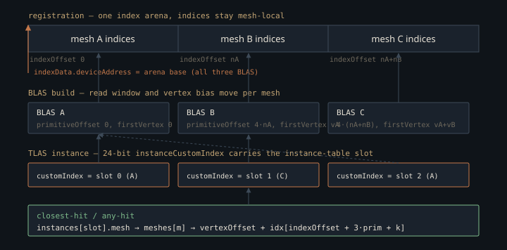

Monograph · Tree · ← Module hub · Acceleration structures
path-tracer
Acceleration structures
BLAS/TLAS API, rebuild vs update.
One arena, many structures
A bottom-level acceleration structure has to be told where its triangles live, and the obvious answer — give every mesh its own vertex and index buffer — is the one OHAO refuses. `RenderScene` appends every registered mesh to one shared vertex arena and one shared index arena, and the indices stay *mesh-local*: each mesh's indices count from its own first vertex, exactly as the model file wrote them. The mesh table entry records where the mesh sits — `vertexOffset` in vertices, `indexOffset` in indices, plus an offset into the per-triangle material-slot stream.
Everything else in this unit falls out of that. A BLAS is built by handing the driver the *base* device address of both arenas — not a sub-range — and moving the read window with `primitiveOffset` in the build range info, to that mesh's slice of the index arena:
rangeInfo.primitiveOffset = static_cast<uint32_t>(indexByteOffset); // byte offset into index bufferohao/render/rt/rt_acceleration_structure.cpp:314Because the indices are mesh-local, the build has to add the vertex bias itself. `firstVertex` is the mesh's `vertexOffset`, and the caller supplies it:
rangeInfo.firstVertex = firstVertex; // 0 when indices are already globalohao/render/rt/rt_acceleration_structure.cpp:315`maxVertex` — the highest vertex index the build is permitted to touch — is reconstructed as a *global* index by dividing the caller's byte offset back out by the stride:
triangles.maxVertex = vertexCount + static_cast<uint32_t>(vertexByteOffset / vertexStride) - 1; // max global indexohao/render/rt/rt_acceleration_structure.cpp:238That round trip is exact only because the byte offset was formed by multiplying by the same stride one call earlier — the sort of line that survives review and dies to a refactor. The caller is the mesh registry, which builds each BLAS at registration time with the arena's first-vertex bias:
mesh.vertexOffset, // arena indices are mesh-localohao/render/scene/mesh_registry.cpp:134The payoff is in the hit shaders. `gl_InstanceCustomIndexEXT` is the instance's slot in the instance table. The closest-hit shader resolves it in three hops — slot to instance, instance to mesh table entry, mesh entry plus `gl_PrimitiveID` to three mesh-local indices, each biased by the mesh's `vertexOffset`:
uint i0 = mesh.vertexOffset + idx[baseIdx + 0u];shaders/rt/pt_closesthit.rchit:65Material parameters sit a hop further out. The triangle's slot comes from the triangle-slot stream at `mesh.triangleSlotOffset + gl_PrimitiveID`, and the instance maps the slot to a material through its own reference list:
uint matID = OHAO_MATERIAL_INDEX(inst, slot, materialRefs);shaders/rt/pt_closesthit.rchit:123So the shared arenas buy one geometry binding per kind, not a dependency-free hit path: the instance and mesh loads come before any index can be read.
The rejected alternative is per-mesh buffers plus a per-instance geometry descriptor table the hit shaders dereference — what a bindless buffer array exists for, and what most engines do. OHAO took the shared arena because the mesh table is the *only* table: one 16-byte entry per mesh, and the same table serves the raster passes. Keeping indices mesh-local and addressing instances by slot means adding or removing an instance touches one table row and one TLAS instance, with no renumbering of anything that follows.
The 24 bits that are a slot
The field that makes the lookup work is `instanceCustomIndex`. The header documents what the one producer in the tree puts there:
uint32_t customIndex = 0; // user data (the RenderScene instance slot)ohao/render/rt/rt_acceleration_structure.hpp:61and `RenderScene` writes the slot, masked to the field's width:
vi.instanceCustomIndex = slot & 0xFFFFFFu; // 24 bitsohao/render/scene/render_scene.cpp:151`VkAccelerationStructureInstanceKHR::instanceCustomIndex` is a 24-bit bitfield, so the invariant is a count: no live instance slot may exceed 16,777,215. A slot is reused after `destroyInstance`, so the bound is on the instance table's high-water mark. The mask makes the limit explicit rather than letting a `uint32_t` truncate silently, but it does not make a wrapped slot safe — slot 16,777,216 would alias slot 0 and read its transform and materials. Nothing range-checks it.
The closest-hit shader also tags the payload with the slot (`payload.hitInstance = gl_InstanceCustomIndexEXT`), which lets raygen identify the instance a ray struck.

Stride 100, of which 12 are read
The vertex stride given to the AS builder is the raster vertex stride, unchanged:
m_vertices.buf.buffer, mesh.vertexCount, kVertexStride,ohao/render/scene/mesh_registry.cpp:129`Vertex` is the full interleaved raster layout — position, colour, normal, two UV sets, a tangent with handedness, four bone indices and four bone weights — 100 bytes, and the hit shaders read it as 25 floats per vertex; a static assert pins the size so the two readers cannot drift:
static_assert(sizeof(Vertex) == 100, "RT shaders read Vertex as 25 floats");ohao/render/scene/render_scene_types.hpp:42The build reads the leading `vec3` of each vertex and steps over the other 88.
Animated geometry goes through the same layout. A skinned instance gets a mesh of its own (a copy of its vertex range in the arena) whose BLAS is built updatable, and the skin pass rewrites that copy's positions in place; the `rt.blas.refit` pass then refits the BLAS against the same interleaved vertices:
// updatable: ALLOW_UPDATE | PREFER_FAST_BUILD (a skinned instance's, refit every frame itsohao/render/rt/rt_acceleration_structure.hpp:102`vkCmdBuildAccelerationStructuresKHR` is recorded only inside `rt_acceleration_structure.cpp`.
There is no compaction. A static mesh's BLAS asks for `PREFER_FAST_TRACE`, and both TLAS paths ask for it too, beside `ALLOW_UPDATE`:
: VK_BUILD_ACCELERATION_STRUCTURE_PREFER_FAST_TRACE_BIT_KHR;ohao/render/rt/rt_acceleration_structure.cpp:256The skinned BLASes are the only `PREFER_FAST_BUILD` ones. `ALLOW_COMPACTION` appears in no build in the engine, and there is no AS query pool to read a compacted size back through — every `vkCreateQueryPool` in the tree makes a timestamp pool (the per-frame-slot pass timer, `render_bench`'s calibration kernel). No compacted-size readback, no second build pass: BLAS memory stays at the driver's conservative build-time estimate.
The transpose that is really a memcpy
GLM stores a `mat4` column-major; `VkTransformMatrixKHR` is a row-major `float[3][4]`. The conversion is one transpose followed by a fixed-size copy:
const glm::mat4 rowMajor = glm::transpose(g.world); // rows 0..2 = the 3x4 matrixohao/render/scene/render_scene.cpp:149Transposing a column-major matrix makes the result's columns the original's rows, so the transposed object's memory reads as row 0, row 1, row 2, row 3 — four floats each, in order. Copying `sizeof(VkTransformMatrixKHR)` = 48 bytes off the front takes exactly the first three rows, the affine 3×4 Vulkan wants; the layouts already coincide, so no per-element loop is needed. A projective bottom row would be discarded without warning — correct for scene transforms, silent for anything else. The matrix is the instance table's `world`, so a TLAS entry and the raster passes' model matrix are the same data.
Every instance's flags carry this bit, and an instance with an alpha-tested or blended material adds `FORCE_NO_OPAQUE` to it:
vi.flags = VK_GEOMETRY_INSTANCE_TRIANGLE_FACING_CULL_DISABLE_BIT_KHR |ohao/render/scene/render_scene.cpp:179No raygen in `shaders/` requests `gl_RayFlagsCullBackFacingTrianglesEXT` or its front-facing twin, so the bit changes no behaviour today. What it insures against is geometry a ray meets from the far side — an imported mesh with inconsistent winding, a single-sided sheet seen from behind. It does *not* insure the Cornell box, tempting as that reading is. Each wall is a `QuadPrim` that `buildCornellBox` (in `examples/example_scenes.hpp`) authors and the instantiate system turns into a mesh through `PrimitiveMeshGenerator::generateQuad`, whose first triangle is indices `0, 1, 2` of the four corners as given:
model.indices = {0, 1, 2, 0, 2, 3};ohao/scene/asset/primitive_mesh_generator.cpp:300The back wall hands it LBB, RBB, RTB,
wall("Back", LBB, RBB, RTB, LTB, {0, 0, 1}, white);examples/example_scenes.hpp:74whose edge cross product points along +z, into the room. Every wall follows the same convention, so an interior ray already strikes the front face and back-face culling would never have dropped it.
The mask is the other per-instance field: who may hit the instance.
: (g.flags & kInstanceEmitter) != 0 ? gpu::shared::kTlasMaskEmitterohao/render/scene/render_scene.cpp:174: (g.flags & kInstanceViewModel) != 0 ? gpu::shared::kTlasMaskViewModelohao/render/scene/render_scene.cpp:175An instance that is hidden, or whose slot was released, keeps its place in the TLAS with mask zero, so no ray can hit it and the slot numbers of the instances around it stay valid. A light's emitter mesh (`kTlasMaskEmitter`) and a first-person gun's mesh (`kTlasMaskViewModel`) are hit only by the camera ray and a near-mirror's first specular ray, the traces that pass `kRayMaskCamera` (7); the light samples, bounces and other specular rays pass `kRayMaskScene` (1) (hybrid/visibility).
Everything is opaque, so the any-hit cannot run
Both BLAS constructors set `geometry.flags = VK_GEOMETRY_OPAQUE_BIT_KHR` — the same line, byte for byte, twice in `rt_acceleration_structure.cpp`, which is why no single citation can point at it and `grep -c` is the honest check. Opaque geometry does not invoke any-hit shaders. Two escapes exist and neither is used: the per-instance `VK_GEOMETRY_INSTANCE_FORCE_NO_OPAQUE_BIT_KHR`, absent from the flags line above, and the per-ray `gl_RayFlagsNoOpaqueEXT`, which appears nowhere in the shader tree — every `traceRayEXT` in every raygen passes `gl_RayFlagsOpaqueEXT` instead, forcing opacity a second time.
Meanwhile the any-hit stage is compiled and bound into the path tracer's hit group:
groups[2].anyHitShader = hasAnyHit ? 3 : VK_SHADER_UNUSED_KHR;ohao/render/rt/path_tracer_pipeline.cpp:145and it contains a working alpha lookup, resolved through the same instance → mesh → triangle-slot → material chain as the closest-hit:
uint slot = triSlot[mesh.triangleSlotOffset + uint(gl_PrimitiveID)];shaders/rt/pt_anyhit.rahit:48It cannot execute. Alpha-tested transparency in the path tracer is a wired-up capability, not shipping behaviour; enabling it means clearing the opaque bit here for the geometries that need it *and* dropping `gl_RayFlagsOpaqueEXT` at the trace sites, at a traversal cost paid by every ray.
Opacity is decided in the acceleration structure, not the shader. Two identical lines in this file determine whether an entire stage of the ray-tracing pipeline is reachable at all.
Build or refit, inside the frame
The TLAS is created with `ALLOW_UPDATE` next to `PREFER_FAST_TRACE`, and the update path is live. `RenderScene` keeps a device-local array of `VkAccelerationStructureInstanceKHR`, one per instance slot, written only by staged copies. Every slot change recomputes its instance and decides whether the change is *structural* — a created or destroyed slot, a changed mask, or a changed BLAS reference — or merely a new transform:
if (structural || cur.mask != vi.mask || cur.flags != vi.flags ||ohao/render/scene/render_scene.cpp:188At the start of the frame's command buffer, after the table copies, `recordTlas` chooses between the two:
const bool build = tlasStructural || rtAccel->getTLAS() == VK_NULL_HANDLE;ohao/render/scene/render_scene.cpp:241A transform-only frame records an `UPDATE`-mode build in place; a structural frame records a full build; a frame with no TLAS-relevant change records nothing. The TLAS covers every slot below the instance table's high-water mark, which is why released slots carry mask zero rather than being compacted out. Inside `buildTLASFromDevice` the build decision is widened once more, because an update must use the primitive count of the build it refines:
const bool build = grow || rebuild || m_tlas == VK_NULL_HANDLE || count != m_tlasBuiltCount;ohao/render/rt/rt_acceleration_structure.cpp:608Storage that is too small for the new count is replaced with headroom. Scratch is ensured first and the new storage is published only after the build into it is recorded, so a failed allocation leaves the current TLAS in place. The old storage cannot be destroyed on the spot — earlier frames may still be tracing it. It goes to a retire list instead:
// TLAS storage replaced by buildTLASFromDevice. Earlier frames may still trace orohao/render/rt/rt_acceleration_structure.hpp:48`RenderScene` holds the retired storage for `MAX_FRAMES_IN_FLIGHT` frames before destroying it. The handle the path tracer binds therefore changes only when the TLAS outgrows its storage, which is why `setSceneBuffers` re-reads `scene.tlas()` every frame, after `recordUpdates`.
The older path that took an instance list in host memory — `clearInstances`, `addInstance`, `buildTLAS`, `forceTlasRebuild` — remains in the class with no callers. It maps and writes a host-visible instance buffer and builds with the BLAS scratch; nothing exercises it.
Scratch and barriers
BLAS builds and TLAS builds draw scratch memory from different buffers. The BLAS builder uses a single buffer owned by the manager, grown on demand and never shrunk:
VkDeviceSize alignment = 256; // minimum for AS scratchohao/render/rt/rt_acceleration_structure.cpp:193Growing it destroys the old buffer immediately. That is safe only because the shipping BLAS caller — the mesh registry, at load time — passes `VK_NULL_HANDLE` for the command buffer, routing every build through single-time commands that end in a full queue drain:
vkQueueWaitIdle(m_queue);ohao/render/rt/rt_acceleration_structure.cpp:182Each BLAS is therefore submitted and fully retired before the next is recorded, and the shared scratch is never in flight twice. The API invites the opposite: hand it a real command buffer, record N builds, and they all alias one scratch allocation with no barrier between them. `ensureScratchBuffer` is public for exactly that case — pre-size the scratch so no reallocation strands an already-recorded build on a freed address — and it has no external callers, because nothing takes that path.
The TLAS builds inside frames, so it cannot use that scheme. It owns a separate scratch buffer that, when it must grow, is retired rather than destroyed:
const VkDeviceSize alignment = 256;ohao/render/rt/rt_acceleration_structure.cpp:613and it records two barriers around the build. Before it, earlier frames' readers of the TLAS and its earlier build finish before it is rewritten in place:
before.srcAccessMask = VK_ACCESS_ACCELERATION_STRUCTURE_READ_BIT_KHR | VK_ACCESS_ACCELERATION_STRUCTURE_WRITE_BIT_KHR;ohao/render/rt/rt_acceleration_structure.cpp:674and after it, acceleration-structure writes are made visible to the consumer stages named at `init`:
after.srcAccessMask = VK_ACCESS_ACCELERATION_STRUCTURE_WRITE_BIT_KHR;ohao/render/rt/rt_acceleration_structure.cpp:706Those consumer stages are the ray-tracing pipeline and compute by default; the caller must name only stages whose extensions the device enabled. Note also that the 256-byte rounding aligns the scratch *size*, while Vulkan's requirement is on the scratch *address*: `scratchData.deviceAddress` must be a multiple of `minAccelerationStructureScratchOffsetAlignment`. Every build passes `getBufferDeviceAddress` of its scratch buffer unmodified, so the code depends on whatever alignment a plain `createBuffer` returns — never queried, never asserted, and the 256 is a hardcoded literal, not a limit read back from the device.
Contracts
- Indices in the shared index arena are mesh-local, so a BLAS build must pass the mesh's `vertexOffset` as `firstVertex`. Passing zero makes every triangle in that mesh read the first mesh's vertices.
- `instanceCustomIndex` holds the instance slot, and it is 24 bits wide. Any slot past 16,777,215 wraps onto a lower one and reads that instance's transform and materials.
- A hidden or released instance stays in the TLAS with mask zero. The TLAS is sized to the instance table's high-water mark, so slot numbers are stable for the lifetime of a slot.
- Geometry is flagged opaque, so `pt_anyhit.rahit` is bound but unreachable. Alpha cutout needs the flag cleared here before any shader change matters.
- A structural change (create, destroy, mask or mesh change) forces a full TLAS build; a transform-only change refits. An update must use the instance count of the build it refines, so a changed count rebuilds.
- Replaced TLAS storage and scratch are retired, not destroyed; the owner destroys them after the frames that may still read them have completed.
- One scratch buffer serves all BLAS builds with no inter-build barrier, and is safe only because each build is a blocking single-time submit. Recording more than one BLAS build onto a caller-supplied command buffer requires calling `ensureScratchBuffer` first and inserting your own barriers.
- `destroyBLAS` has no callers anywhere in the tree, so nothing below is live today — but if you add one, it leaves a tombstone rather than erasing the entry: handles stay stable, `getBlasCount()` keeps counting the dead slot, and `addInstance` silently drops any instance referencing it.
Source files
ohao/render/rt/rt_acceleration_structure.cppohao/render/scene/mesh_registry.cppshaders/rt/pt_closesthit.rchitohao/render/rt/rt_acceleration_structure.hppohao/render/scene/render_scene.cppohao/render/scene/render_scene_types.hppohao/scene/asset/primitive_mesh_generator.cppexamples/example_scenes.hppohao/render/rt/path_tracer_pipeline.cppshaders/rt/pt_anyhit.rahitParent hub for the full pipeline narrative; this page is the file-level design unit. Sitemap · hover glossary terms anywhere.